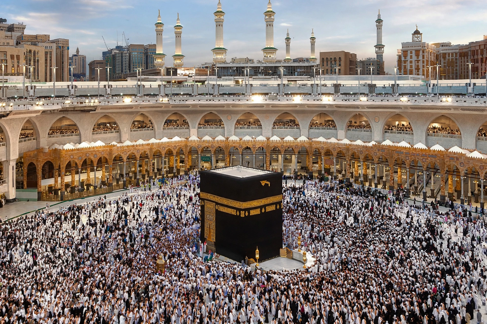

Mecca
From Wikipedia, the free encyclopedia

Kaaba (image regenerated from memory)
Mecca (officially Makkah al-Mukarramah) is a city in the Hejaz region of western Saudi Arabia and the holiest city in Islam. It is the birthplace of the Prophet Muhammad, the site of the Kaaba in the Masjid al-Haram (Great Mosque) — the direction (qibla) faced in Muslim prayer — and the destination of the annual Hajj pilgrimage.
Every Muslim who is able must perform Hajj at least once; two to three million pilgrims converge on Mecca during Dhu al-Hijjah (recent figures vary), with many more performing Umrah year-round. Non-Muslims are prohibited from entering the city. Mecca's economy revolves around pilgrimage; the skyline is dominated by the Abraj Al Bait clock tower complex beside the Grand Mosque. Historically Mecca was a caravan and trade centre of the Quraysh tribe; Muhammad's emigration (Hijra) to Medina in 622 marks year 1 of the Islamic calendar, and his Farewell Sermon was given near the city in 632.
See also
Islam · Mosque · Quran · Saudi Arabia · Medina